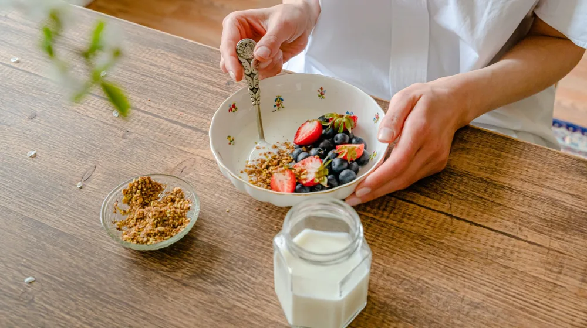
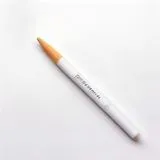

아침 루틴 만들기 실패하는 3가지 이유와 실천 가능한 4단계 설계법
사진: https://kaboompics.com/ / Pexels (무료 이미지, 출처 표기)
왜 내 아침 루틴은 작심삼일로 끝날까?

새해나 매월 초가 되면 많은 이들이 원대한 아침 루틴을 계획합니다. 5시에 기상해서 명상을 하고, 독서를 한 뒤, 조깅을 하고 건강한 식사를 하겠다는 식입니다. 하지만 대부분의 도전은 작심삼일로 끝나고 맙니다. 이는 당신의 의지력이 부족해서가 아닙니다. 뇌의 특성과 습관의 원리를 고려하지 않고 무리한 계획을 세웠기 때문입니다.
아침 루틴이 실패하는 첫 번째 이유는 너무 거창한 목표를 한 번에 설정하기 때문입니다. 우리의 뇌는 갑작스러운 변화를 위협으로 인식하고 기존 상태를 유지하려는 경향이 있습니다. 두 번째는 전날 밤의 수면을 고려하지 않은 기상 시간 설정입니다. 마지막으로는 의지력에만 의존하는 무방비한 환경 설계가 원인입니다. 진짜 지속 가능한 루틴은 몸과 뇌가 스트레스를 받지 않는 작은 시작에서 출발합니다.
지속 가능한 아침 루틴 설계를 위한 4단계 방법
뇌에 무리를 주지 않으면서 자연스럽게 몸에 익는 아침 루틴을 만드는 과학적인 4단계 설계법을 소개합니다. 이 순서대로 차근차근 시작해보세요.
- 1단계: 기상 시간을 15분씩 점진적으로 당기기
갑자기 평소보다 2시간 일찍 일어나는 것은 몸에 무리를 줍니다. 미국 수면재단(National Sleep Foundation)의 분석에 따르면 갑작스러운 수면 패턴 변화는 생체 리듬을 깨뜨려 하루 종일 피로를 유발할 수 있습니다. 일주일 단위로 15분씩 기상 시간을 앞당기는 것이 가장 안전하고 자연스럽습니다. - 2단계: 쪼개서 작게 만들기 (Tiny Habit)
"아침에 일어나 30분 운동하기" 대신 "눈 뜨자마자 스트레칭 1번 하기"처럼 목표를 아주 작게 낮추세요. 실패하기 어려울 정도로 난이도를 낮춰서 성공 경험을 쌓는 것이 핵심입니다. - 3단계: 기존 습관에 새 습관 붙이기 (Habit Stacking)
이미 매일 하고 있는 행동 바로 뒤에 새로운 루틴을 덧붙이는 기법입니다. 예를 들어 "아침에 양치질을 한 후에(기존 습관), 바로 물 한 잔을 마신다(새 습관)"처럼 연결고리를 만드는 것입니다. 뇌가 행동 경로를 쉽게 인지하게 돕는 매우 효과적인 방법입니다. - 4단계: 전날 밤에 실행 장벽 낮추기
아침 루틴의 성패는 전날 밤에 결정됩니다. 아침에 일어나서 무엇을 할지 고민하는 순간 의지력 에너지가 소모됩니다. 전날 밤 책상 위에 읽을 책을 미리 펴두거나, 운동복을 침대 옆에 준비해두어 아침에 눈을 뜨자마자 고민 없이 바로 행동에 들어갈 수 있게 만드세요.
나에게 맞는 아침 활동 유형별 비교
남들이 좋다고 하는 루틴이 나에게도 꼭 맞으라는 법은 없습니다. 자신의 성향과 라이프스타일에 맞는 활동 유형을 선택해 루틴을 조율해보세요.
아침 루틴을 오래 유지하기 위한 주의사항과 실천 체크리스트
어렵게 시작한 루틴을 중도에 포기하지 않으려면 몇 가지 원칙을 기억해야 합니다. 아래 체크리스트를 마음속에 새겨두세요.
- 완벽주의 내려놓기: 하루 이틀 루틴을 지키지 못했다고 해서 자책할 필요는 없습니다. 주말이나 늦잠을 잔 날에도 원래 루틴의 '축소판'(예: 독서 15분 대신 딱 1페이지만 읽기)을 실천하며 흐름만 깨뜨리지 않는다면 충분합니다.
- 스마트폰과 거리 두기: 침대 주변에 스마트폰을 두고 자면 눈을 뜨자마자 SNS나 뉴스를 확인하게 됩니다. 이는 아침 뇌에 과도한 도파민을 자극해 루틴 실행을 방해하므로, 스마트폰은 침대와 떨어진 곳에 두고 주무시는 것을 권장합니다.
- 적정 수면 시간 확보: 무조건 일찍 일어나는 것보다 충분한 수면이 선행되어야 합니다. 수면 전문가들은 성인 기준 7~8시간의 안정적인 수면이 보장되어야 아침 루틴이 일상의 스트레스가 되지 않는다고 강조합니다.
자주 묻는 질문 (FAQ)
Q. 주말이나 휴일에도 평일과 똑같이 아침 루틴을 지켜야 하나요?
생체 리듬을 유지하기 위해서는 가급적 평일과 기상 시간 차이를 1시간 이상 벌리지 않는 것이 좋습니다. 다만 휴일에는 평일보다 다소 여유로운 강도로 조율하여 스트레스를 줄이길 권합니다.
Q. 저는 저녁형 인간인데도 억지로 아침 루틴을 만들어야 할까요?
유전적으로 늦게 자고 늦게 일어나는 체질을 가진 저녁형 인간이라면 억지로 이른 새벽에 일어날 필요가 없습니다. 핵심은 일어난 직후의 1시간을 어떻게 생산적으로 보내느냐에 있습니다. 아침형 인간이라는 강박에서 벗어나 자신만의 '기상 후 루틴'으로 변형하여 적용해 보세요.
🔗 이 글도 함께 보면 좋아요: 스마트폰 중독 탈출: 실패 없는 디지털 디톡스 4단계 가이드
관련 추천 상품
이 포스팅은 쿠팡 파트너스 활동의 일환으로, 이에 따른 일정액의 수수료를 제공받습니다.
한눈에 보는 상품 목록

해빗 트래커 다이어리
기상 알람 조명